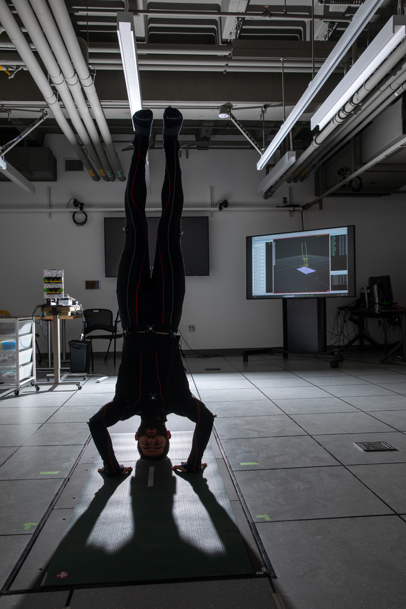

Current Focus
- Longitudinal physiology and behavioral health in real-world settings.
- Wearable, environmental, and low-burden sensing technologies for continuous health measurement.
- Behavioral and mind-body interventions informed by physiologic and behavioral data.
- Translational systems bridging clinical science, engineering, and human-centered digital health.
- Computational approaches for understanding stress, recovery, resilience, and mental well-being.
Research Approach
My work focuses on developing practical, human-centered technologies that translate physiological and behavioral signals into meaningful health insights. I am particularly interested in systems that support awareness, motivation, and long-term behavior change while remaining minimally intrusive and preserving the integrity of lived experience.
I approach health measurement as a longitudinal and contextual process rather than a series of isolated snapshots, with the goal of building scalable tools that can operate naturally within everyday life.

MIT E25-131 Motion Capture Suite